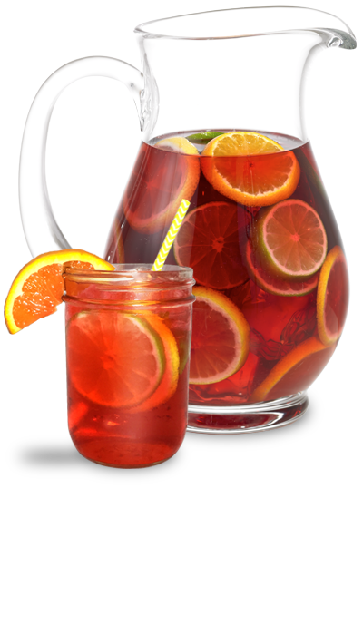
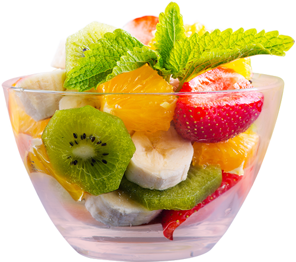
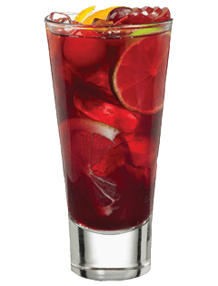

다양한 과일들과 탄산수, 설탕 등을 넣고 레드와인을 부워 하루 숙성시켜 먹는 스페인 전통음료

와인을 좀 더 맛있고 예쁘게 하지만 간단하게 먹고 싶을 때는 상그리아 만한 것이 없다. 레시피도 아주 간단하며 맛을 잘 살려준다. 단 주의할 점이 있다면 한번 만들어 놓으면 최대한 그날, 늦어도 3일 이내에는 다 마시는 것을 추천한다. 지나치게 오래 재워놓으면 과일 껍질의 향만 우러나오는게 아니라 쓴맛까지 느껴져 맛이 없어진다.
홈파티의
히든 아이템

비주얼 적으로도 예쁘고 부담없이 만들 수 있기 때문에 파티음료로 제격이다.
보통은 사과, 오렌지, 레몬을 사용하지만 기호와 제철에 따라 딸기, 키위, 수박 등 다양한 과일로 만들 수 있다.

와인은 도수가 좀 나가는(보통 13.5정도 되는) 레드와인이 잘 어울리는 편이다. 너무 낮은 도수의 와인일 경우에는 와인의 좋은 향이 죽고 과일향만 강하게 남게 되어 애매한 맛의 상그리아가 된다.